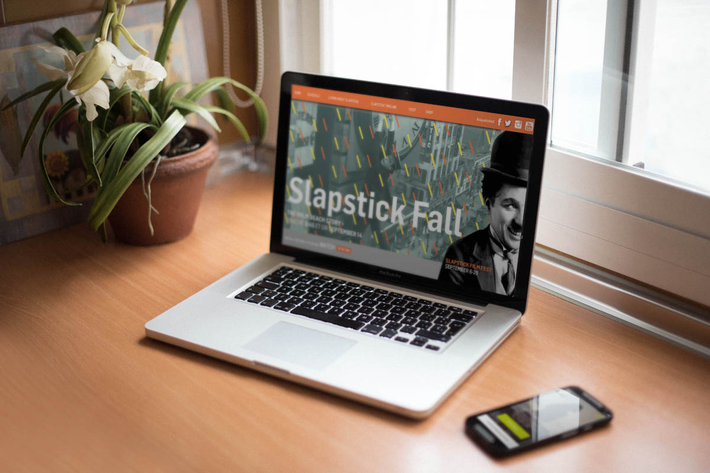
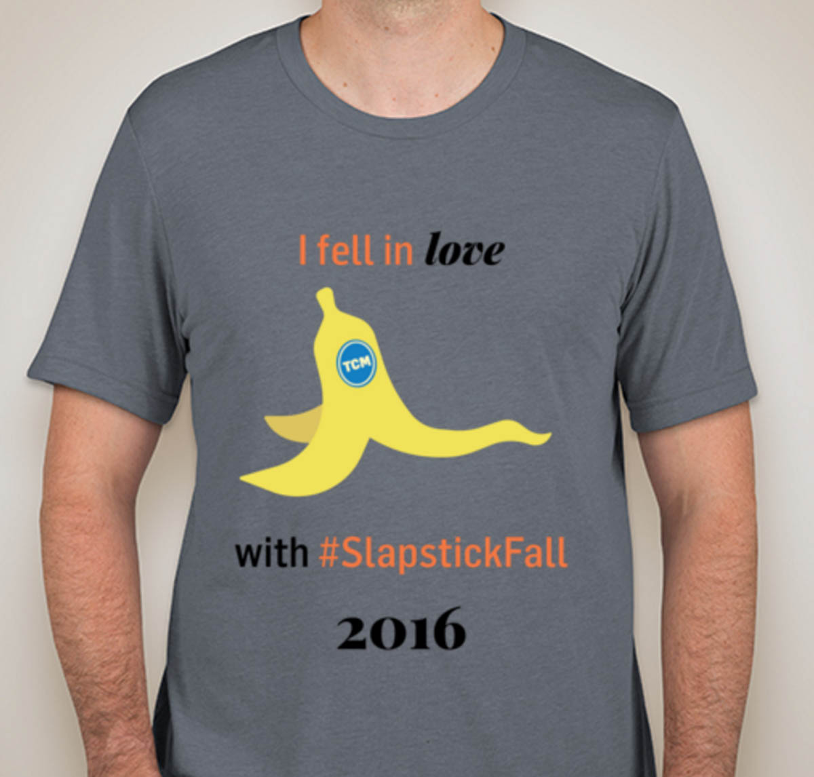
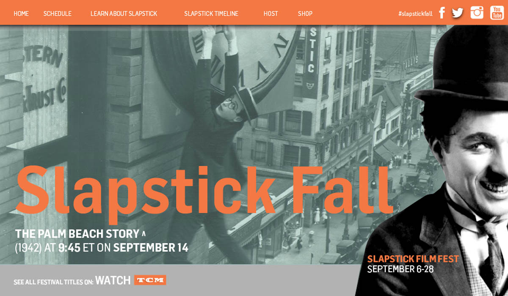

Turner Classic Movies: Let's Movie
Let’s Movie is an Immersive class at Ball State that promotes a free college course Turner Classic Movies offers. The class created a campaign to promote the course and presented the course to Turner Classic Movie’s General Manager Jennifer Dorian, executive Shannon Clute, and other TCM employees. This project consisted of a styleguide, web design, and illustration. As Brand Manager, I created a general look for the materials that we created within the TCM branding style and oversaw the class to ensure that the work we presented was within TCM’s brand guidelines and looked unified. I also designed merchandise to promote the course and a microsite to access the online course.


